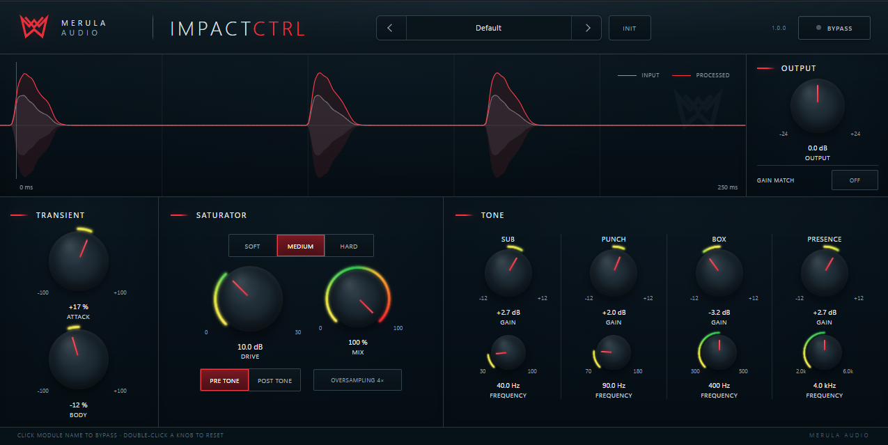

01
Transient
Independent Attack & Body shaping to sharpen, soften or reinforce the kick envelope.

More impact. Less setup.
IMPACTCTRL is a free all-in-one kick processor built for fast, focused results. Shape the transient, add saturation, control the tone and level-match your processing — all in one plugin.

Independent Attack & Body shaping to sharpen, soften or reinforce the kick envelope.
Three saturation modes with Drive & Mix, Pre/Post Tone routing and optional 4× oversampling.
Four kick-focused bell bands — Sub, Punch, Box & Presence — with proportional-Q behavior.
Automatic level matching for faster and more useful before/after comparisons.
See input and processed kick envelopes at a glance while shaping the sound.
Individual module bypass, global bypass, smooth parameter handling and zero-latency processing.
Free 64-bit VST3. No installer. Unzip the download and copy the complete IMPACTCTRL.vst3 folder to your system VST3 directory.